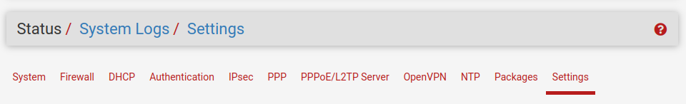
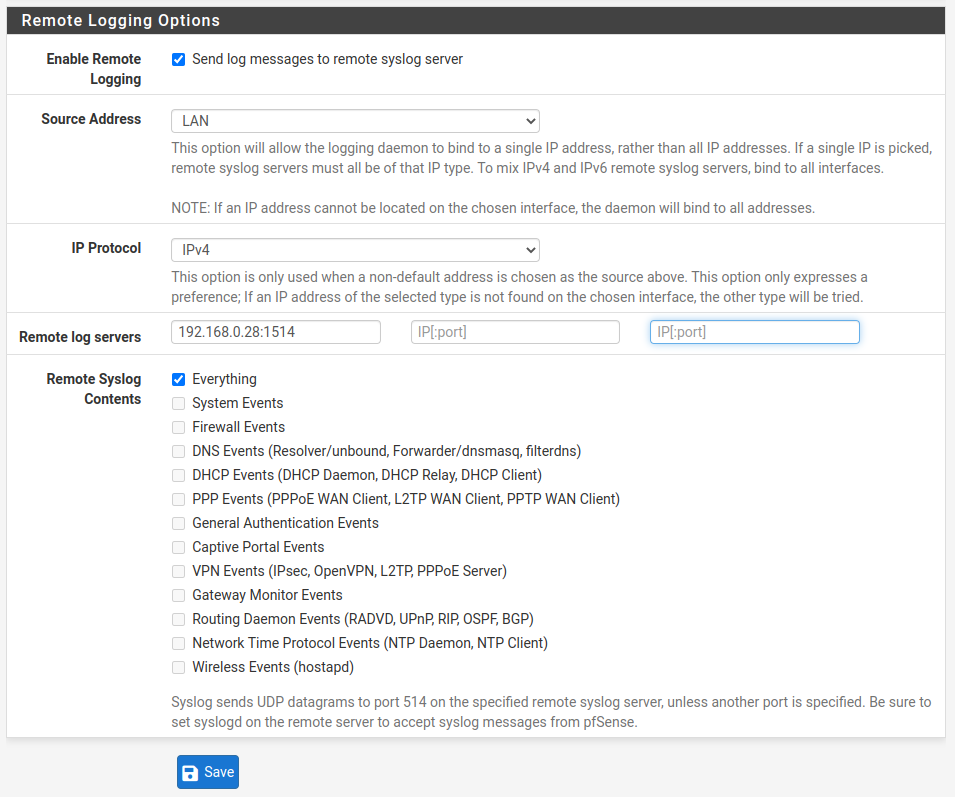
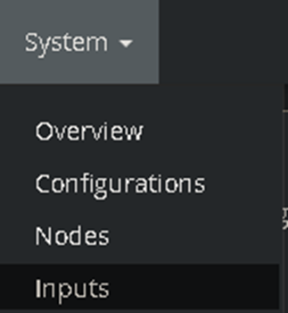
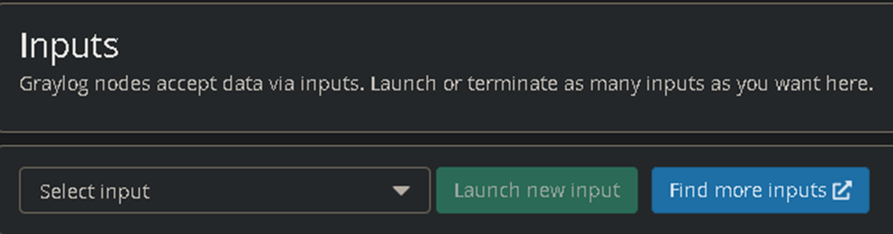
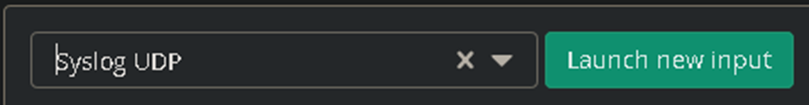
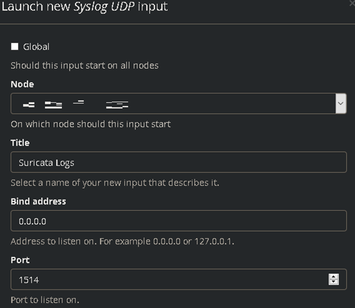
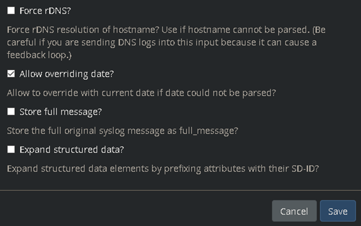
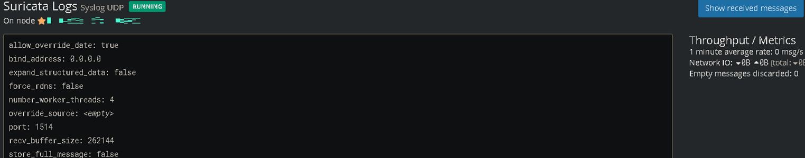
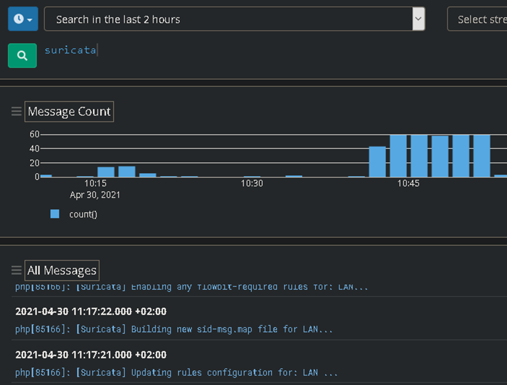

GrayLog
1. Gestión de Suricata en GRAYLOG
1.1 Configurar las alertas para GrayLog
Para configurar que las alertas lleguen a Graylog, en el pfSense hay que decirle a qué IP y por qué puerto tiene que enviar los logs de Suricata. Para ello en el pfSense hay que ir a Status > SystemLogs > Settings.

Las opciones General Logging Options y Log Rotation Options las dejaremos predeterminadas. La última opción, Remote Logging Options, activaremos la casilla de enviar logs a un servidor de syslog (para este caso está en 192.168.0.28). Después, elegiremos si queremos que el origen sea de la red LAN, WAN, localhost o cualquiera, luego el protocolo de la IP, la dirección IP del servidor y el puerto del servidor y por último lo que queremos que se envíe a ese servidor.

Ahora tenemos el sistema de logs configurado para que se envíe a Graylog. Con lo cual tenemos que instalar y configurar Graylog.
1.2 Instalar GrayLog
- https://howtoforge.es/instalar-y-configurar-el-servidor-de-monitorizacion-de-graylog-ubuntu-20-04/
- https://howtoforge.es/como-instalar-graylog-4-en-ubuntu-22-04/
1.3 Configurar GrayLog
1
En Graylog, tenemos que ir a System > Inputs.

2
Nos saldrá el siguiente menú.

3
En Select input, seleccionaremos Syslog UDP y luego Launch new input.

4
Aparecerá el siguiente menú. El Node ponemos el que nos salga por predeterminado. Después ponemos un título descriptivo, la dirección IP la dejamos predeterminada y el puerto ponemos el 1514 ya que es el que hemos puesto en el Pfsense. Importante que este puerto esté abierto por UDP en la instalación si lo hemos hecho por Docker.

5
Todo lo demás lo podemos dejar predeterminado y finalmente le damos a Save.

6
Finalmente se habrá creado el siguiente input. Si hacemos click en Show received messages nos aparecerán los logs que está recibiendo tanto del Pfsense como del Suricata.

7
En el buscador ponemos Suricata y ya nos aparecerá todo lo relacionado a ello.

...
Obra publicada con Licencia Creative Commons Reconocimiento No comercial Compartir igual 4.0